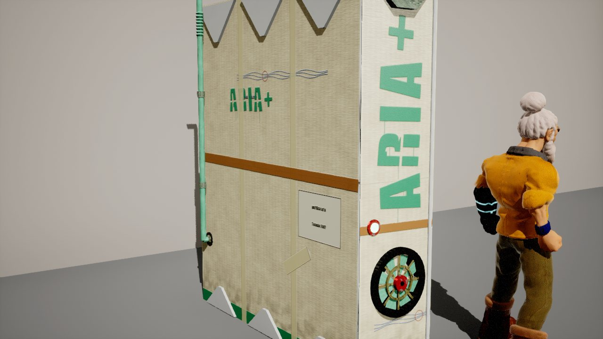

Taranto, 2087. Il braccio è in abbonamento. La vendetta no.

Platform d'azione in 2,5D
In sviluppo
Instagram e YouTube: in arrivo
Il gioco
Un platform d'azione con il doppio salto. Si gioca lungo un percorso, e la telecamera segue GIG di lato come un operatore sul set: si avvicina negli scontri, si alza quando si apre la vista, gira con la strada.

-
1
Il platform
La spina dorsale: muri, tetti, cantieri e un doppio salto per arrivarci.
-
2
Le arene
Quando arrivano gli Esattori la camera si ferma e si combatte, anche in profondità: ci si sposta verso il fondo per schivare.
-
3
L'hacking
Il braccio cyber di GIG non serve solo a colpire: con lui si risolvono i puzzle.
Sotto la nube rossa
Taranto, 2087. Gli altiforni sono spenti da più di sessant'anni, ma la vecchia fabbrica sta chiusa sotto cupole bianche e sopra la città resta una nube rossa. SIDERA, la holding che possiede la bonifica, la chiama «vapore di bonifica».
SIDERA possiede anche l'aria, venduta in abbonamento con il nome di ARIA+, e le braccia di mezza città: MANODOPERA, il braccio cibernetico degli operai infortunati. Chi salta una rata se lo vede bloccare a distanza. Poi arrivano gli Esattori.
Nel 2087 a Taranto è cambiato quasi tutto, tranne i riti della Settimana Santa.


GIG
Cataldo Gigante, 50 anni, dei Tamburi.
Ingegnere, ha inventato MANODOPERA nel garage di sua madre, dopo che un nastro della Linea gli aveva tranciato il braccio sinistro. Poi ha fatto troppe domande: in una settimana SIDERA gli ha tolto il lavoro, la casa e il nome sui brevetti, e gli ha bloccato il braccio.
Burbero, ironico e testardo. Aggiusta tutto, tranne la sua vita.
Gli altri li incontrerete strada facendo.
Dal laboratorio
Qui arrivano i post di Instagram e gli Shorts di YouTube, uno per uno, con il loro link.
Ancora niente: il primo arriva presto.
Come è fatto, davvero
- È un videogioco, fatto in Unreal Engine 5. Non è stop motion girato a mano: i personaggi sono modelli 3D che imitano i pupazzi, e si muovono a scatti come loro.
- Il set imita un diorama di cartone, plastilina e materiali di recupero, come se Taranto l'avesse costruita un ragazzino con le mani giovani ma esperte.
- Alcuni strumenti sono di intelligenza artificiale: immagini di riferimento e superfici dipinte con ChatGPT, modelli 3D con Meshy, voci con HeyGen, musica con Suno.
- È un progetto personale. Non è in vendita e non ha una data di uscita.